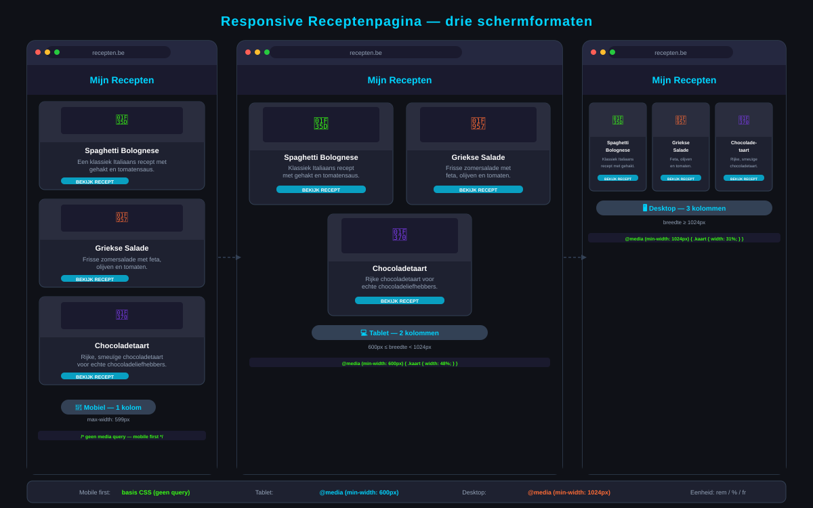

Responsive Web Design
- Je kan uitleggen wat Responsive Web Design (RWD) is en waarom het belangrijk is
- Je kan de
<meta name="viewport">tag correct toepassen - Je kan afbeeldingen automatisch laten schalen met
max-width: 100% - Je kan media queries schrijven met
@mediaom lay-out aan te passen per schermgrootte - Je kan relatieve eenheden (
%,em,rem) gebruiken in plaats van vastepx-waarden - Je kan het mobile-first principe uitleggen en toepassen
- Je kan CSS-functies
min(),max()enclamp()gebruiken voor vloeiende lay-outs
1. Waarom Responsive Web Design?
Vandaag bezoeken mensen websites op heel verschillende toestellen: smartphones, tablets, laptops, desktops en zelfs tv's. Al die schermen hebben andere afmetingen.
Als jouw website er goed uitziet op een laptop van 1920px breed, maar op een smartphone van 375px breed alles over elkaar staat of de tekst microscopisch klein is, dan heb je een probleem.
Responsive Web Design (RWD) is de aanpak waarbij één website zich aanpast aan alle schermformaten — zonder aparte mobiele versie te bouwen.
Het is onze plicht als front-end developer om zoveel mogelijk mensen toe te laten een site zonder moeilijkheden te gebruiken — ongeacht hun toestel.
2. Een korte geschiedenis
2.1 Steve Jobs en de iPhone (2007)
In 2007 stelt Steve Jobs de eerste iPhone voor. De webbrowserwereld zou nooit meer dezelfde zijn. Vóór de iPhone waren bijna alle websites ontworpen voor brede desktopschermen — typisch 960px breed. De iPhone had een volwaardige browser (Safari), maar een smal scherm. Websites moesten zich aanpassen.
2.2 Ethan Marcotte en RWD (2010)
In 2010 publiceert Ethan Marcotte een invloedrijk artikel en introduceert de term Responsive Web Design. Hij beschrijft drie technieken:
- Flexibele eenheden — werk met
%offrin plaats van vastepx - Schaalbare afbeeldingen —
max-width: 100%zodat afbeeldingen automatisch krimpen - Media queries —
@mediaom CSS aan te passen per schermgrootte
3. De meta viewport tag — verplicht!
Voeg altijd deze regel toe in de <head> van elk HTML-document:
<meta name="viewport" content="width=device-width, initial-scale=1.0">Waarom? Toen de iPhone uitkwam, deed Safari alsof het scherm 980px breed was. Met deze meta-tag zeg je: "Gelieve de werkelijke schermbreedte te gebruiken."
Zonder deze tag: Je site lijkt responsief in de devtools van de browser, maar op een echte smartphone zie je de desktopversie (heel klein).
4. Flexibele eenheden
4.1 Percentages (%)
/* Niet responsief — altijd 960px wide */
.container {
width: 960px;
}
/* Responsief — maximaal 960px, maar krimpt mee */
.container {
max-width: 960px;
width: 100%;
margin: 0 auto;
}4.2 em en rem
1em= de lettergrootte van het huidige element1rem= de lettergrootte van het root-element (<html>, standaard 16px)
html {
font-size: 16px; /* 1rem = 16px */
}
h1 {
font-size: 2rem; /* = 32px */
margin-bottom: 1rem; /* = 16px */
}
p {
font-size: 1rem; /* = 16px */
line-height: 1.6;
}5. Afbeeldingen schalen
img {
max-width: 100%;
height: auto; /* behoudt de verhoudingen */
}De afbeelding zal nooit breder worden dan haar container. Als de container krimpt, krimpt de afbeelding mee. De hoogte past zich automatisch aan zodat de afbeelding niet vervormt.
6. Media queries (@media)
Een media query werkt als een if-statement: "Als het scherm minstens X breed is, pas dan deze CSS toe."
6.1 Basisstructuur
/* Basisstijl (voor het kleinste scherm — mobile first) */
body {
font-size: 1rem;
}
/* Grotere schermen: als breedte >= 600px */
@media (min-width: 600px) {
body {
font-size: 1.1rem;
}
}
/* Nog grotere schermen: als breedte >= 1024px */
@media (min-width: 1024px) {
body {
font-size: 1.2rem;
}
}6.2 Lay-out aanpassen
/* Mobile: één kolom */
.kaarten {
display: flex;
flex-direction: column;
gap: 1rem;
}
/* Tablet en groter: twee kolommen */
@media (min-width: 600px) {
.kaarten {
flex-direction: row;
flex-wrap: wrap;
}
.kaart {
flex: 1 1 calc(50% - 0.5rem);
}
}
/* Desktop: drie kolommen */
@media (min-width: 1024px) {
.kaart {
flex: 1 1 calc(33.333% - 0.67rem);
}
}6.3 Veelgebruikte breekpunten (breakpoints)
| Naam | Breedte | Typisch toestel |
|---|---|---|
| Small | < 600px | Smartphone |
| Medium | 600px–1023px | Tablet |
| Large | ≥ 1024px | Laptop/desktop |
7. Mobile-first aanpak
Mobile first betekent: schrijf eerst de CSS voor het kleinste scherm. Voeg daarna media queries toe voor grotere schermen.
/* Mobile-first: begin klein, voeg toe voor groot */
.navigatie {
display: flex;
flex-direction: column;
}
@media (min-width: 768px) {
.navigatie {
flex-direction: row;
}
}8. CSS-functies voor vloeiende lay-outs
8.1 min()
.container {
width: min(100%, 960px);
/* op breed scherm: 960px, op smal scherm: 100% */
}8.2 max()
p {
font-size: max(1rem, 2vw);
/* minimaal 1rem, maar groeit mee met de viewport */
}8.3 clamp() — de krachtigste
h1 {
font-size: clamp(1.5rem, 4vw, 3rem);
/* minimaal 1.5rem (mobiel)
voorkeur: 4% van de viewport-breedte
maximaal 3rem (desktop) */
}
.container {
padding: clamp(1rem, 5%, 3rem);
}9. CSS Grid auto-fill voor responsief zonder media queries
.kaarten {
display: grid;
grid-template-columns: repeat(auto-fill, minmax(250px, 1fr));
gap: 1rem;
}Dit werkt volledig responsief: op een breed scherm 4 kolommen, op een tablet 2-3, op een smartphone 1 kolom — geen enkele media query nodig!
10. De developer tools gebruiken
Elke browser heeft een responsive design view in de developer tools:
- Open de developer tools (
F12ofCtrl+Shift+I) - Klik op het smartphonepictogram (responsive design view)
- Pas de breedte aan om verschillende schermformaten te simuleren
- Kies een vooraf ingesteld toestel (iPhone, Galaxy, iPad, enz.)
Dit is een simulatie. Test ook op een echt toestel als je kunt!
Oefeningen
Maak een HTML-pagina responsive-recept.html met bijhorend stijl.css.
Inhoud:
- Een navigatie met 3 links
- Een hoofding met paginatitel
- Drie receptenkaartjes met naam, beschrijving en een afbeelding
Eisen:
- Gebruik de
<meta name="viewport">tag correct - Afbeeldingen zijn schaalbaar (
max-width: 100%) - Mobile-first: op smal scherm staan de kaartjes onder elkaar
- Via een media query bij 600px staan er twee kaartjes naast elkaar
- Via een media query bij 1024px staan er drie kaartjes naast elkaar
- Gebruik
remvoor lettertypes en%offrvoor breedtes

Huistaak
Opdracht: Responsieve portfoliopagina
- Deel 1 — Structuur (3 punten): Maak een pagina
portfolio.htmlmet een header, navigatie, sectie met projectkaarten en een footer. Gebruik semantische HTML-elementen. - Deel 2 — Mobile-first styling (3 punten): Schrijf eerst de CSS voor een smal scherm (één kolom). Gebruik
remvoor lettertypes en voeg demeta viewporttag toe. - Deel 3 — Breakpoints (4 punten): Voeg twee media queries toe: bij 600px twee kaarten naast elkaar, bij 1024px drie kaarten naast elkaar. Test in de browser-devtools.
Vragenlijst
Controleer of je de leerstof van dit hoofdstuk begrijpt.
Welke metatag moet je toevoegen zodat een mobiele browser de werkelijke schermbreedte gebruikt?
Wat is de CSS-regel om een afbeelding automatisch te laten schalen zonder te vervormen?
Wat betekent "mobile-first" bij het schrijven van CSS?
Welke CSS-functie begrenst een waarde tussen een minimum en maximum met een voorkeurwaarde ertussen?
Welke CSS-grid regel maakt automatisch zoveel kolommen als mogelijk, elk minimaal 250px breed?
Wat doet @media (min-width: 768px)?